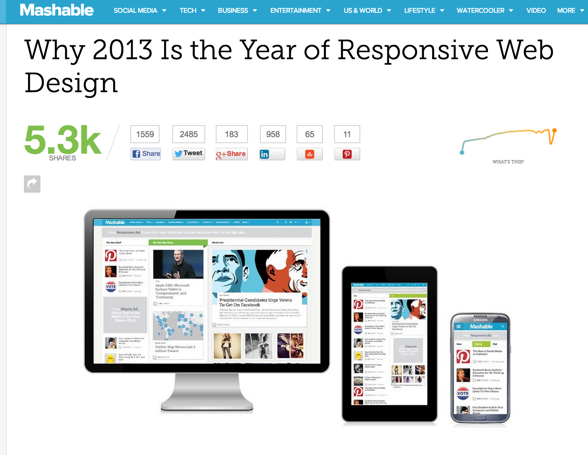
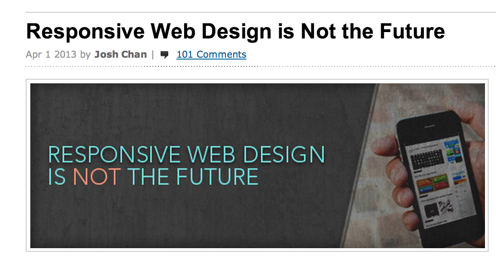
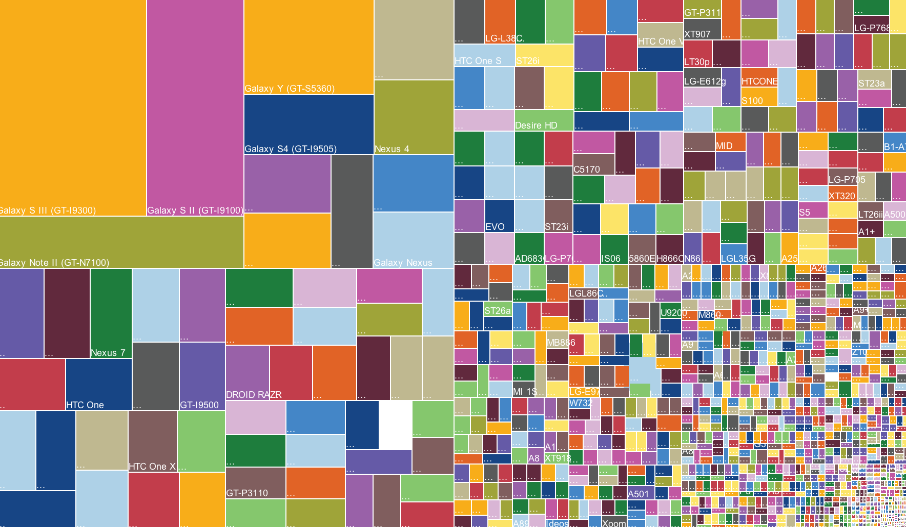
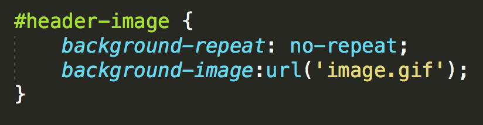
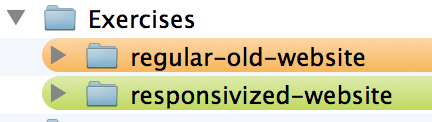
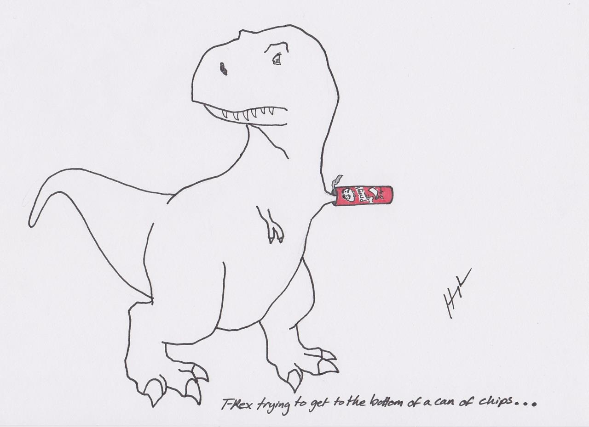
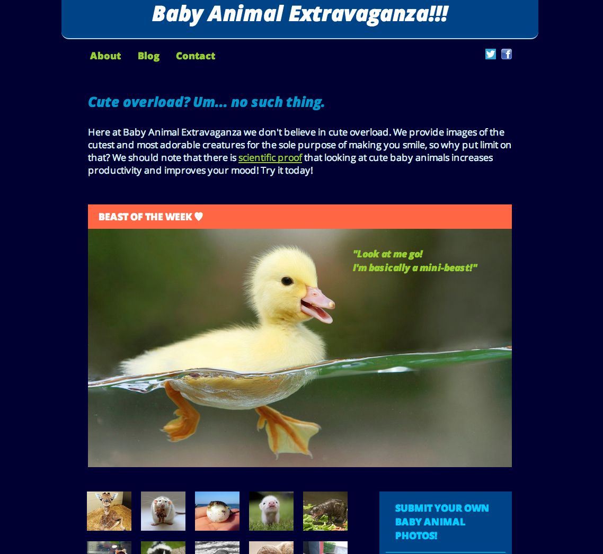
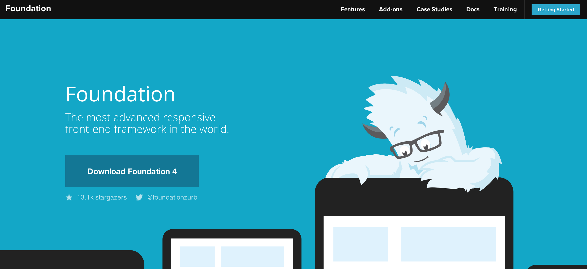
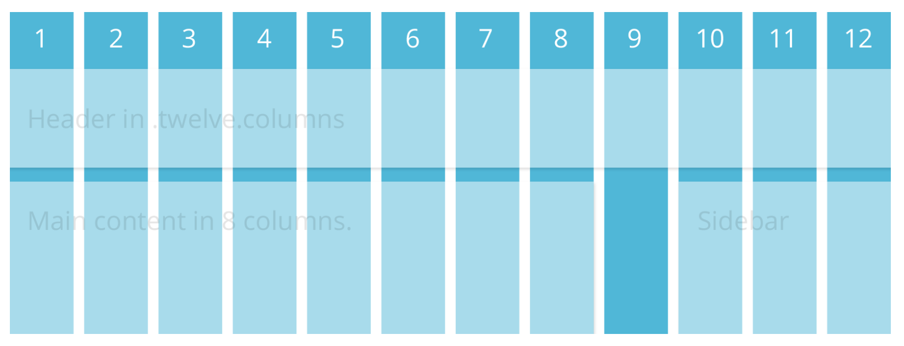
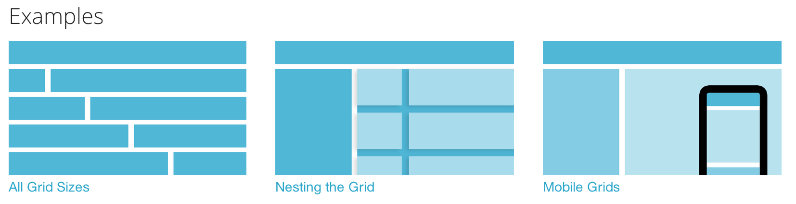

Set up your computer for today
Wifi Network: Seed Coworking
Password: Ken!5733
Install Google Chrome, if you dont' have it already.
Feel free to use whatever text editor you like.
Today we're using SublimeText2:
Responsive Design Workshop
Welcome!
Girl Develop It is here to provide affordable and accessible programs to learn software through mentorship and hands-on instruction.
Some "rules"
- We are here for you!
- Every question is important
- Help each other
- Have fun
Meet Gwen
- 1982: Took my only programming class IN FORTRAN ON PUNCHCARDS.
- Entomologist and Writer at Wired.com
- Freelance Web Consultant I make websites for people who don't like farting around with websites.
- Twitter: @bug_gwen
- E-mail: membracid@gmail.com
Meet Angel
- 1996: Took my first college programming class in Visual Basic..
- 1998-1999: Student Intern at Owens Community College. Wrote my first lines of production code in COBOL.
- Early 2013: Joined GDI Detroit and took my first class. After that class I began to TA for GDI Detroit. In August of 2013, I decided to apply to start a chapter in Toledo!
- Twitter: @starangel75
- E-mail: angel@girldevelopit.com
Because this workshop is new...
...what do you hope to get out of it?
What is Responsive Design?
It depends on who you ask!
What is Responsive Design?
What is Responsive Design?
The theory and practice of crafting websites that allow the user to enjoy its features no matter what device they are viewing it on.

What is Responsive Design?
Responsive design is USER centered; users on different devices may have different needs.
- Pew Research Internet Project Data; January 2014.
- 90% of Americans have a cell phone
- 58% of Americans have a smart phone
- 42% of Americans have a tablet
- 54% of Americans with a disability use the internet (compared to 81% reporting no disabilities)
- Pew Internet Project
- Pew Internet Project Disability Report
One web, for the love of humanity!
There shouldn't be a mobile web and a tablet web and desktop web. People will view a website on whatever device they have with them.
Ourjob is to make things work on whatever they have.

(Almost) 1 billion devices
(these are just Android phone, tablets, phablets. Here are the rest.)
Responsive's ingredients
- Fluid design grid that adjusts to screen size and device
- Flexible images
- CSS3 media queries (extension of the @media rule)
Fluid Design: Fixed, Responsive, or Jello?
Sometimes there are good reasons to choose fixed layouts that don't adapt to screen size (tabular data, etc)
(Remember “best viewed in Internet Explorer at 680x480px”? Avoiding browser hassles for the designer is not a good reason!)
Fluid Design: Fixed, Responsive, or Jello?
Infinately stretched text is difficult to read, so some limits on flexibilty are useful.
Most sites combine elements of both fixed and fluid design; it's both solid and liquid.
Responsive's ingredients
- Fluid design grids
- Flexible images
- CSS3 media queries, an extension of the @media rule
Examples of Responsive websites
If we visit these sites and "right-click - inspect" them, you'll see their media queries in action.
- http://createdm.com
- http://www.starbucks.com/
And speaking of which, Starbucks gets bonus points for documenting and sharing their styleguide here: http://www.starbucks.com/static/reference/styleguide/
The Responsinator!
To mimick device breakpoints, you can resize the browser window manually.
Or you can use one of many emulators like The Responsinator.
Firefox Web Developer Plugin
In addition to many other handy tools, FWD Resize has an emulator .
A missed Responsive opportunity
In support of Responsive
Lots of wireframing software such as Balsamiq now offer a plethora of responsive-capable tools.

In support of Responsive
New ways of presenting designs are also popping up, such as Style Tiles. The mockup below was turned into the website on the right.


Media queries
If you've ever created a print stylesheet for a website (media="print") then you're already familiar with the idea of creating a specific stylesheet to come into play under certain conditions.
Media queries



Media Queries is just CSS for certain situations
Rather than looking for a type of device they look at the capability of the device, and you can use them to check for all kinds of things.
- width and height (of the browser window)
- device width and height
- orientation – for example is a phone in landscape or portrait mode?
- resolution
Let's look at our Media Queries
We've got 2 folders. We'll be working from the "responsivized-website" folder.
Which browsers support media queries?
The current versions of all major browsers support media queries. There will always be someone who is, for whatever reason, using an ancient browser.
Some examples:
- Internet Explorer 7 (3 versions back)
- Internet Explorer 8 (2 versions back)
- Safari 3.2 (4 versions back)
A complete list of media query support:http://caniuse.com/css-mediaqueries
What if I need my site to be responsive in an old browser?
The best we can do for now is implement some sorcery using polyfills like these:
Responsive vs. Accessible
Are these things archenemies? Cousins? They both respond and adapt, right?
Responsive vs. Accessible
Can't we all just get along?
Responsive content that fluidly changes and responds to fit any screen or device size.
Accessible or adaptive design is a best practice, with the goal of presenting the same content to everyone, regardless of device or other limitations.
Responsive + Accessible
these can (and should) coexist.
What about "Mobile First"?
Don't offer "lighter" content or a restricted experience to those viewing your site on a mobile device. Plan your site out thoughtfully so your content is concise and simplified to begin with.
What is Responsive NOT?
Responsive is not a replacement for mobile apps. Responsive can save companies time and money by using one set of code, but only if it's the appropriate solution.
Here's what Target is currently doing:


Questions? Break time?
Grab a snack! Coding is next!
Ready to code?
Let's code! We're going to turn this simple, fixed-width website into a responsive one.
Exercise Files
Let's go back to our "responsivized-website" folder.
Editing, Previewing, Tweaking
As we add to mediaqueries.css, we'll have to keep going back and checking index.html in the browser. Revise. Refresh. Repeat.
Starting from scratch: Framework
Maybe it turns out you've got a site that's going to be a bit more complex, or you just want to start with a clean slate. Here's where Responsive Frameworks come in. Here are a few. You may have to try out a few to find one that fits your needs.
I pick frameworks same way I choose wine: prettiest label.
Kidding. But I really did want to check out Foundation, so let's go there and download it.
Frameworks give us: The Grid
This is simply a 12-column flexible grid that can scale out to an arbitrary size (defined by the max-width of the row) that's easily nested.
Frameworks give us: The Grid
Some examples of grids configurations.
Exploring The Grid
Let's take a look at what we downloaded from Foundation and see what we can do!
Testing Your Responsive Website
The best test is to use the actual device. Super impractical unless you have access to a device lab.
One alternative is to use an emulator like Xcode, for testing on iOS devices (kind of a huge file to download - 1.65GB).
Other options:
Resources
Resources
- Making Videos Responsive
http://css-tricks.com/NetMag/FluidWidthVideo/Article-FluidWidthVideo.php
- Testing your Responsive Designs
https://developer.apple.com/xcode/ (iOS only)
Questions?
Thanks for Responsivizing with us!

angel@girldevelopit.com Twitter: @starangel75